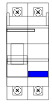
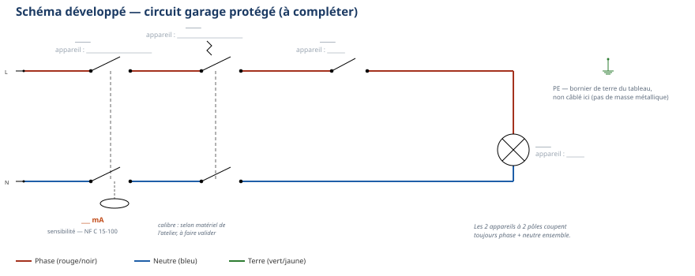

Thème / DomaineBrasage tendre et schémas domestiques
Module atelier S3-E1 · 4 h × 2 passagesProtections électriques et DDR
SéquenceS3 · semaines 8-9
Nom________________
Prénom________________
Date (passage 1 / passage 2)_______ / _______
Positionnement01234
Mise en situation professionnelle
Ordre d'intervention n° OI-S3-3 : le client fait préparer son pavillon pour l'installation future
d'un climatiseur. Avant toute chose, il a un problème récurrent à vous signaler : « le circuit du garage
disjoncte. » Le professeur, responsable du chantier, vous confie le contrôle et la remise en
conformité des protections du tableau électrique. Aujourd'hui, une question guide tout le module :
qui protège quoi, dans un tableau électrique ?
Tâches
T10 Repérer, raccorder, assembler les réseaux fluidiques, aérauliques et électriques T11 Contrôler les circuits hors fonctionnement T12 Respecter les consignes de sécurité et protéger la zone de travail
Savoirs
S5.6 Réseaux, matériels électriques et de régulation augmenté
Savoir-être
Sécurité électrique sans rappel · jamais provoquer un vrai défaut · rigueur du câblage · honnêteté du contrôle
Compétences (≤ 4)
ConfortementC3.6 Câbler, repérer, connecter les liaisons électriques et électroniques Découverte → ConfortementC3.7 Contrôler la mise en œuvre des équipements électriques et fluidiques
Ce qui change depuis S2 — En S2-E1, le disjoncteur était déjà présent sur
votre platine, mais vous ne vous étiez jamais demandé ce qu'il faisait vraiment : c'était un passage
obligé avant de câbler, jamais un objet d'étude. Aujourd'hui, la protection devient elle-même le sujet :
vous allez découvrir ce que fait chaque appareil, comment il le fait, et un appareil nouveau apparaît, le
DDR, qui protège les personnes — pas seulement le matériel. É1 est passée : vos 2 objectifs
de progrès s'appliquent ici. Si vous étiez positionné(e) 1 ou 2 sur C3.6 au poste ÉLEC d'É1, la phase de
vérification des prérequis d'aujourd'hui vous reprend en priorité — n'hésitez pas à le signaler au
professeur.
Passage 1 / Passage 2 — ce qui change
Passage 1 (semaine 8) — découvrir les protections + câbler un circuit protégé par un disjoncteur :
vous découvrez les rôles du fusible, du disjoncteur et du DDR, vous testez le bouton T d'un DDR sur une
platine de démonstration, puis vous câblez un circuit lampe protégé par un disjoncteur seul. Passage 2 (semaine 9) — câbler l'installation complète, en autonomie guidée : vous câblez cette fois
le montage complet — un DDR en tête, puis un disjoncteur, puis le circuit — vous réalisez vous-même le
contrôle hors tension (continuité et serrage des connexions), et vous réalisez les essais de
déclenchement au bouton test, sur votre propre montage.
Objectifs — je serai capable de…
nommer le rôle de chacun des 3 appareils de protection (fusible, disjoncteur, DDR) et ce contre
quoi chacun protège ;
identifier un disjoncteur et un DDR sur une façade réelle, et localiser le bouton test
(T) du DDR ;
câbler un circuit lampe protégé par un disjoncteur, avec un contrôle hors tension avant tout
appel au professeur ;
câbler l'installation complète (DDR en tête + disjoncteur + circuit) et réaliser seul(e) le
contrôle hors tension (continuité + serrage des connexions) ;
réaliser un essai de déclenchement au bouton test du DDR, en respectant strictement le seul
geste autorisé — jamais provoquer un vrai défaut.
Prérequis — je sais déjà…
Ce module s'appuie sur des gestes déjà vécus en S1 et S2 : je sais déjà réaliser
seul(e) une consignation et une vérification d'absence de tension (VAT) avant toute intervention ; je sais
câbler un montage domestique protégé par un disjoncteur, même si je ne connaissais pas encore son
fonctionnement interne ; je sais manipuler le multimètre en fonction continuité. Je connais aussi mon
positionnement au poste ÉLEC de l'évaluation É1 (montage + mesures) : si j'étais à 1 ou 2, je le
signale au professeur avant de commencer — une reprise ciblée m'est proposée pendant l'exercice au fil de
l'eau.
Matériel
Platine de démonstration du professeur : DDR réel câblé, façade visible, bouton test accessible
Platine élève équipée d'un rail oméga (× 1 par poste)
Disjoncteur magnétothermique 1P+N (module réel de l'atelier)
DDR 30 mA 2P (module réel de l'atelier) — passage 2 uniquement
Interrupteur simple (× 1) ; support de lampe (× 1) + ampoule adaptée à la tension d'alimentation
Bornier de phase, bornier de neutre, bornier de terre (× 1 chacun)
Un fusible et un porte-fusible bipolaire, pour observation et comparaison (non câblés)
Vis à bois pour la fixation du matériel (consommable)
Fils électriques souples, section du poste école (à faire valider par le professeur), couleurs
normalisées : rouge ou marron (phase), bleu (neutre), vert/jaune (terre) (consommable)
Tournevis plat et tournevis cruciforme, pince à dénuder, pince coupante
Multimètre numérique + jeu de cordons de mesure (rouge + noir)
Sécurité électrique — un rituel déjà acquis, une règle nouvelle
Vous connaissez déjà la consignation et la vérification d'absence de tension (VAT)
depuis S1 : vous les appliquez seul(e), sans rappel. Une règle nouvelle apparaît aujourd'hui, propre aux
appareils de protection : on ne provoque jamais un vrai défaut pour « voir si ça marche ». Le DDR se
teste uniquement avec son bouton T, prévu pour cela.
Risque
Parade
Choc électrique par contact direct avec une pièce sous tension
Ne jamais toucher un fil ou une platine sans avoir vérifié l'absence de tension (VAT). Travailler toujours hors tension pour tout câblage.
Déclenchement non maîtrisé si un défaut réel est provoqué « pour tester »
Jamais de court-circuit ni de mise à la terre volontaire. Le seul essai autorisé est le bouton test (T) du DDR.
Confusion entre le bouton test (T) et un bouton de réarmement
Lire l'étiquette de l'appareil avant d'appuyer. En cas de doute, appeler le professeur avant de toucher quoi que ce soit.
Shunt (pontage) d'une protection pour « faire marcher quand même »
Jamais ponter un disjoncteur, un DDR ou un fusible, même provisoirement. Une protection pontée ne protège plus rien.
Remise sous tension accidentelle pendant le câblage ou le contrôle
Disjoncteur du poste maintenu ouvert pendant tout le câblage. Seul le professeur ferme le circuit, après contrôle systématique.
La consignation — rituel NF C 18-510, appliqué sans rappel
1. Couper — ouvrir le disjoncteur du poste.
2. Vérifier l'absence de tension (VAT) — contrôler au multimètre, position voltmètre.
3. Condamner / signaler — le professeur garde la main sur la mise sous tension.
4. Travailler hors tension — je câble, je mesure la continuité, toujours disjoncteur ouvert.
Gestes interdits
Jamais toucher un fil ou une platine sans avoir vérifié l'absence de tension ;
Jamais provoquer un vrai défaut (court-circuit, fil à la terre) pour tester une protection —
seul le bouton T du DDR est autorisé ;
Jamais toucher un conducteur nu, même hors tension présumée ;
Jamais shunter (ponter) une protection, quelle qu'elle soit ;
Jamais mettre une platine sous tension moi-même — seul le professeur le fait, après contrôle.
Avant de commencer, complétez la fiche de sécurité à cocher ci-dessous et
faites-la viser par le professeur. Tenue et EPI exigés :
Chaussures de sécurité ; Pas de bijoux ni de montre ; Manches ajustées ; Cheveux longs attachés.
Fiche de sécurité à cocher — document CAP, F. Henninot.
🚨 En cas d'incident — couper (interrupteur général ou arrêt
d'urgence de l'atelier, localisé dès l'entrée), alerter immédiatement le professeur, ne jamais
déplacer un camarade électrisé sans certitude sur son état. La trousse de secours est localisée dès
l'entrée dans l'atelier.
PASSAGE 1 · SEMAINE 8 · JALON A — découvrir les 3 appareils de protection — ≈ 55 min
Vous venez d'observer le professeur déclencher un disjoncteur, puis un DDR.
Vous savez qu'un appareil a coupé le circuit — mais lequel protège contre quoi ? Complétez les 3 fiches
ci-dessous à partir de ce que le professeur vient d'expliciter.
1. Le fusible
Le fusible protège contre les (une intensité trop
grande pendant longtemps) et les (une intensité très
grande et brutale). À l'intérieur, un fil calibré
sous l'effet de la chaleur : le circuit est coupé. Une fois fondu, le fusible
réutilisable : il faut le
. Le porte-fusible tient le fusible et permet
de le retirer en sécurité, hors tension.
Dessinez le symbole du fusible :
Cadre de dessin — symbole du fusible
2. Le disjoncteur
Le disjoncteur protège contre les
et les . Il a deux mécanismes : un mécanisme
(un fil qui chauffe et se déforme lentement, pour les
surcharges) et un mécanisme (une bobine qui réagit
très vite, pour les courts-circuits). Contrairement au fusible, le disjoncteur
après un déclenchement : on peut le remettre en
position marche sans le remplacer.
Dessinez le symbole du disjoncteur :
Cadre de dessin — symbole du disjoncteur
3. Le DDR (dispositif différentiel résiduel)
Le DDR protège les — pas seulement le matériel. Il
compare en permanence le courant qui entre par la phase et celui qui revient par le neutre. Si une
partie du courant s'échappe vers la terre (par exemple à travers le corps d'une personne), le DDR
détecte cette et coupe le circuit en une fraction de
seconde. Sa sensibilité s'exprime en . Dans l'habitat,
la valeur normalisée est mA (norme
).
Voici la façade d'un disjoncteur différentiel réel, du type que vous retrouverez
sur la platine de démonstration.

Façade réelle — disjoncteur différentiel 1P+N (matériel réel de l'atelier : modèle et calibre à confirmer par le professeur).
Question — Sur la façade ci-dessus, entourez le bouton test.
D'après vous, quelle lettre le repère habituellement, et pourquoi cette lettre ?
Tester le bouton T — sur la platine de démonstration, en rotation
☐ 1. Vérifier que la platine de démonstration est sous tension normale (le professeur confirme)
☐ 2. Attendre le signal du professeur avant de toucher quoi que ce soit
☐ 3. Appuyer fermement sur le bouton test (T), une seule fois
☐ 4. Observer : la manette du DDR bascule en position ARRÊT
☐ 5. Noter le temps de réaction observé
☐ 6. Réarmer : basculer la manette en position MARCHE, sous le contrôle du professeur
Question de synthèse — Un fusible peut-il, à lui seul, protéger une
personne contre l'électrocution ? Expliquez votre réponse avec ce que vous venez d'apprendre sur le DDR.
⚠ Rappel — Le bouton test n'est jamais un jeu : on l'actionne une
fois, sur autorisation du professeur, jamais en dehors de cet exercice encadré.
PASSAGE 1 · SEMAINE 8 · JALON B — câbler un circuit protégé par un disjoncteur — ≈ 70 min
Vous allez câbler un circuit lampe simple, protégé par un disjoncteur (Q1).
Le schéma complet du montage final (avec le DDR) figure en annexe pleine page : aujourd'hui, câblez
uniquement la partie Q1 → S1 → H1 (à droite du repère Q0, qui sera ajouté au passage 2).

Circuit garage protégé — schéma réduit, sans repères. Le schéma complet légendé figure en
annexe pleine page : gardez-le sous les yeux pendant le câblage.
1. Préparer la platine
☐ 1. Vérifier que la platine est hors tension (disjoncteur du poste ouvert)
☐ 2. Positionner le rail oméga selon les cotes indiquées par le professeur
☐ 3. Positionner le disjoncteur (Q1), l'interrupteur (S1) et le support de lampe (H1) selon le schéma d'implantation
☐ 4. Fixer chaque élément à la vis, sans forcer
2. Câbler et contrôler hors tension
☐ 1. Raccorder la phase du bornier à l'entrée de Q1
☐ 2. Raccorder la sortie de Q1 à l'interrupteur S1, puis à la lampe H1
☐ 3. Raccorder le neutre directement du bornier à la lampe H1
☐ 4. Vérifier que chaque connexion est bien serrée et conforme aux couleurs normalisées
Mesure de continuité (multimètre, disjoncteur ouvert)
Interrupteur
Valeur attendue
Valeur mesurée
Conforme ?
Continuité du circuit de la lampe
fermé
proche de 0 Ω (continuité)
☐ Oui ☐ Non
Continuité du circuit de la lampe
ouvert
résistance infinie (circuit ouvert)
☐ Oui ☐ Non
Si une valeur ne correspond pas à celle
attendue, signalez-le vous-même au professeur avant de l'appeler pour le contrôle final : l'honnêteté du
contrôle fait partie de l'évaluation du savoir-être. Une fois votre contrôle conforme, appelez le
professeur : lui seul ferme le disjoncteur.
⚠ Fin du jalon — Une fois la lampe allumée et validée par le professeur,
remettez la platine hors tension avant de passer à la synthèse. Rendez-vous en semaine 9 pour
le passage 2 (câblage complet DDR + disjoncteur).
PASSAGE 2 · SEMAINE 9 · JALON A' — câblage complet, DDR en tête — ≈ 50 min
Ce qui change par rapport au passage 1 — Aujourd'hui, vous câblez
l'installation complète : un DDR (Q0) vient s'ajouter en tête, avant le disjoncteur (Q1).
Moins d'aide, plus vite : personne ne vous redémontre la consignation, et le schéma reste le même que
celui du passage 1 — à vous de le compléter de mémoire.
Circuit garage protégé — même schéma qu'au passage 1. Schéma complet légendé en
annexe pleine page.
Question — De mémoire, nommez les 4 appareils du schéma ci-dessus
(repères et rôles) : complétez les repères directement sur le schéma. Lequel des deux appareils à 2 pôles
protège les personnes ?
Préparer et câbler l'installation complète
☐ 1. Vérifier que la platine est hors tension (disjoncteur du poste ouvert)
☐ 2. Positionner le DDR (Q0), le disjoncteur (Q1), l'interrupteur (S1) et le support de lampe (H1),
selon le schéma d'implantation retrouvé de mémoire
☐ 3. Fixer chaque élément à la vis, sans forcer
☐ 4. Raccorder la phase et le neutre de la source aux bornes d'entrée du DDR (Q0)
☐ 5. Raccorder les bornes de sortie du DDR à l'entrée du disjoncteur (Q1)
☐ 6. Raccorder la sortie phase de Q1 à l'interrupteur S1, puis à la lampe H1
☐ 7. Raccorder la sortie neutre de Q1 directement à la lampe H1
☐ 8. Vérifier que chaque connexion est bien serrée et conforme au schéma
PASSAGE 2 · SEMAINE 9 · JALON B' — contrôle complet + essais de déclenchement — ≈ 75 min — autonomie guidée
Cette fois, le contrôle hors tension porte sur deux points : la continuité
et le serrage de chaque connexion (compétence C3.7, en autonomie). Le professeur valide sans démontrer.
1. Contrôle hors tension complet
Point de contrôle
Interrupteur
Valeur attendue
Valeur mesurée
Conforme ?
Continuité du circuit de la lampe
fermé
proche de 0 Ω
☐ Oui ☐ Non
Continuité du circuit de la lampe
ouvert
résistance infinie
☐ Oui ☐ Non
☐ Serrage vérifié à la main sur chaque borne (Q0, Q1, S1, H1) — aucun fil qui ressort visible
☐ Couleurs normalisées respectées sur tout le montage
Contrôle professeur obligatoire avant remise sous tension
☐ Continuité conforme ☐ Serrage de toutes les bornes vérifié ☐ Aucun conducteur nu accessible
Visa professeur : ________________ Heure : ________________
2. Mise sous tension et essais de déclenchement
Le professeur ferme le disjoncteur de votre poste après avoir vérifié votre
contrôle. Vérifiez que la lampe s'allume, puis réalisez les essais suivants.
☐ 1. Appuyer sur le bouton test (T) du DDR — une seule fois
☐ 2. Observer et noter : la manette du DDR coupe-t-elle bien le circuit ?
☐ 3. Réarmer le DDR sous le contrôle du professeur
☐ 4. Si le poste le permet, tester le bouton du disjoncteur de la même façon (selon le matériel de
l'atelier, à faire valider par le professeur)
Essai
Appareil testé
Coupure observée ?
Temps de réaction
1
DDR (bouton T)
☐ Oui ☐ Non
☐ instantané ☐ retardé
2
Disjoncteur (si testable)
☐ Oui ☐ Non
☐ instantané ☐ retardé
Question de synthèse — Pourquoi teste-t-on uniquement avec le
bouton T, et jamais en provoquant un vrai défaut ? Donnez au moins une raison de sécurité.
⚠ Rappel — fin du passage 2 — Avant de ranger, remettez votre platine
hors tension (disjoncteur ouvert, débranché) : c'est vous qui coupez, jamais le professeur seul en
votre absence.
☐ 1. Remettre la platine hors tension (disjoncteur ouvert, débranchée)
☐ 2. Remettre la molette du multimètre sur OFF, débrancher et ranger les cordons sans coude serré
☐ 3. Ranger les fils, sans les plier de façon serrée ; jeter les chutes dans le bac approprié
☐ 4. Ranger l'outillage (tournevis, pinces, multimètre) à son emplacement
☐ 5. Vérifier que le poste est propre et dégagé pour le poste suivant
Jalons franchis
☐ Passage 1 : 3 fiches complétées, bouton T testé, circuit protégé par disjoncteur câblé et allumé
☐ Passage 2 : circuit complet DDR + disjoncteur câblé, contrôle hors tension conforme (continuité +
serrage), essais de déclenchement réalisés
Visa professeur (passage 1) : ________________ Visa professeur (passage 2) : ________________
Grille d'évaluation
Échelle FrigorX : 0 Non évalué · 1 Non acquis · 2 En cours
d'acquisition · 3 Acquis · 4 Parfaitement maîtrisé. Statut du jour : C3.6 Confortement ·
C3.7 Découverte (passage 1) → Confortement (passage 2) — jamais Évaluation dans ce module.
Compétence / savoir-être
Ancrage
0 Non évalué
1 Non acquis
2 En cours
3 Acquis
4 Maîtrisé
C3.6 Câbler, repérer, connecter les liaisons électriques et électroniques
sur T10 · S5.6
Compétence non observée ce jour.
Câblage non conforme au schéma, malgré aide, ou consignation non respectée.
Câble avec l'aide du professeur pour positionner le matériel ou suivre le schéma.
Câble seul(e) le circuit protégé par disjoncteur (P1) ET l'installation complète DDR + disjoncteur (P2), conformes au schéma.
Comme « Acquis », et câble plus vite et avec plus d'assurance au passage 2 qu'au passage 1.
C3.7 Contrôler la mise en œuvre des équipements électriques et fluidiques
sur T11 · S5.6
Compétence non observée ce jour.
Ne réalise pas de contrôle hors tension avant d'appeler le professeur, même avec aide.
Réalise le contrôle hors tension (P1 : continuité) avec l'aide du professeur.
Réalise seul(e) le contrôle hors tension complet au passage 2 (continuité et serrage) avant d'appeler le professeur.
Comme « Acquis », et explique à un pair pourquoi le contrôle du serrage est aussi important que la continuité.
Savoir-être — sécurité, rigueur, honnêteté
observation continue
Non observé ce jour.
Geste dangereux (fil touché sans VAT, tentative de provoquer un vrai défaut, protection shuntée) : niveau 1 automatique.
Sécurité globalement respectée, quelques rappels nécessaires.
Consignation, VAT et règle du bouton T appliquées sans rappel, contrôles honnêtes même en cas d'erreur.
Comme « Acquis », et veille spontanément à la sécurité d'un pair.
Ce document complété (les deux passages : fiches, schémas, câblages, contrôles, essais, questions répondues)
Fiche de sécurité à cocher visée par le professeur, aux deux passages
Bon de commande hebdomadaire (fils, ampoules, fusibles de rechange)
D'après : Les appareils de
protection et de commande — exercice d'apprentissage (fusible, disjoncteur, DDR), F. Henninot ;
Appareils_Protection_ELEVE.docx et Appareils_Protection_PROF.docx (base indexée, _Archives\Divers). Sources
anciennes non extraites, à rouvrir si souhaité : « Cours le DDR élèves.doc » et « prof.doc »,
« 1-Appareillage de protection domestique bis.doc » — non utilisées ici, rien n'y a été inventé à leur
place ; module2_mesures_protection.html : consultée, sans contenu exploitable, non utilisée. Continuité
directe des documents S1-E1 et S2-E1 produits pour cette même classe.
Circuit garage protégé — schéma de travail complet (passages 1 et 2)
⚠ À imprimer en A3 PAYSAGE (une feuille par
poste) : c'est le document à garder sous les yeux pendant tout le câblage, aux deux passages. Au passage 1,
vous ne câblez que la partie Q1 → S1 → H1 (le DDR Q0 est ajouté au passage 2).